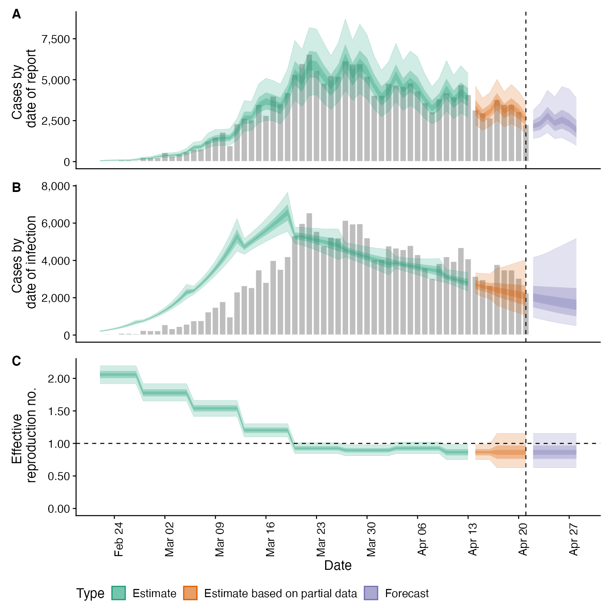

Estimate Infections, the Time-Varying Reproduction Number and the Rate of Growth
estimate_infections.Rd Uses a non-parametric approach to reconstruct cases by date of infection from reported
cases. It uses either a generative Rt model or non-parametric back calculation to estimate underlying
latent infections and then maps these infections to observed cases via uncertain reporting delays and a flexible
observation model. See the examples and function arguments for the details of all options. The default settings
may not be sufficient for your use case so the number of warmup samples (
Uses a non-parametric approach to reconstruct cases by date of infection from reported
cases. It uses either a generative Rt model or non-parametric back calculation to estimate underlying
latent infections and then maps these infections to observed cases via uncertain reporting delays and a flexible
observation model. See the examples and function arguments for the details of all options. The default settings
may not be sufficient for your use case so the number of warmup samples (stan_args = list(warmup)) may need to
be increased as may the overall number of samples. Follow the links provided by any warnings messages to diagnose
issues with the MCMC fit. It is recommended to explore several of the Rt estimation approaches supported as not all
of them may be suited to users own use cases.
estimate_infections( reported_cases, generation_time, delays = delay_opts(), truncation = trunc_opts(), rt = rt_opts(), backcalc = backcalc_opts(), gp = gp_opts(), obs = obs_opts(), stan = stan_opts(), horizon = 7, CrIs = c(0.2, 0.5, 0.9), id = "estimate_infections", verbose = interactive() )
Arguments
| reported_cases | A data frame of confirmed cases (confirm) by date (date). confirm must be integer and date must be in date format. |
|---|---|
| generation_time | A list containing the mean, standard deviation of the mean (mean_sd), standard deviation (sd), standard deviation of the standard deviation and the maximum allowed value for the generation time (assuming a gamma distribution). |
| delays | A call to |
| truncation |
|
| rt | A list of options as generated by |
| backcalc | A list of options as generated by |
| gp | A list of options as generated by |
| obs | A list of options as generated by |
| stan | A list of stan options as generated by |
| horizon | Numeric, defaults to 7. Number of days into the future to forecast. |
| CrIs | Numeric vector of credible intervals to calculate. |
| id | A character string used to assign logging information on error. Used by |
| verbose | Logical, defaults to |

See also
epinow regional_epinow forecast_infections simulate_infections
Examples
# \donttest{ # set number of cores to use options(mc.cores = ifelse(interactive(), 4, 1)) # get example case counts reported_cases <- example_confirmed[1:60] # set up example generation time generation_time <- get_generation_time(disease = "SARS-CoV-2", source = "ganyani") # set delays between infection and case report incubation_period <- get_incubation_period(disease = "SARS-CoV-2", source = "lauer") reporting_delay <- list(mean = convert_to_logmean(3, 1), mean_sd = 0.1, sd = convert_to_logsd(3, 1), sd_sd = 0.1, max = 10) # default setting # here we assume that the observed data is truncated by the same delay as def <- estimate_infections(reported_cases, generation_time = generation_time, delays = delay_opts(incubation_period, reporting_delay), rt = rt_opts(prior = list(mean = 2, sd = 0.1)), stan = stan_opts(init_fit = TRUE))#> Error in (function (classes, fdef, mtable) { methods <- .findInheritedMethods(classes, fdef, mtable) if (length(methods) == 1L) return(methods[[1L]]) else if (length(methods) == 0L) { cnames <- paste0("\"", vapply(classes, as.character, ""), "\"", collapse = ", ") stop(gettextf("unable to find an inherited method for function %s for signature %s", sQuote(fdef@generic), sQuote(cnames)), domain = NA) } else stop("Internal error in finding inherited methods; didn't return a unique method", domain = NA)})(list("logical"), new("nonstandardGenericFunction", .Data = function (object, ...) { standardGeneric("extract")}, generic = structure("extract", package = "rstan"), package = "rstan", group = list(), valueClass = character(0), signature = "object", default = NULL, skeleton = (function (object, ...) stop("invalid call in method dispatch to 'extract' (no default method)", domain = NA))(object, ...)), <environment>): unable to find an inherited method for function ‘extract’ for signature ‘"logical"’#> Error in summary(def): object 'def' not found#> Error in plot(def): object 'def' not found# decreasing the accuracy of the approximate Gaussian to speed up computation. # These settings are an area of active research. See ?gp_opts for details. agp <- estimate_infections(reported_cases, generation_time = generation_time, delays = delay_opts(incubation_period, reporting_delay), rt = rt_opts(prior = list(mean = 2, sd = 0.1)), gp = gp_opts(ls_min = 10, basis_prop = 0.1), stan = stan_opts(control = list(adapt_delta = 0.95), init_fit = "cumulative")) summary(agp)#> measure estimate #> 1: New confirmed cases by infection date 2120 (956 -- 4151) #> 2: Expected change in daily cases Unsure #> 3: Effective reproduction no. 0.9 (0.6 -- 1.2) #> 4: Rate of growth -0.04 (-0.13 -- 0.04) #> 5: Doubling/halving time (days) -17.4 (15.7 -- -5.4)# Adjusting for future susceptible depletion dep <- estimate_infections(reported_cases, generation_time = generation_time, delays = delay_opts(incubation_period, reporting_delay), rt = rt_opts(prior = list(mean = 2, sd = 0.1), pop = 1000000, future = "latest"), gp = gp_opts(ls_min = 10, basis_prop = 0.1), horizon = 21, stan = stan_opts(control = list(adapt_delta = 0.95))) plot(dep)# Adjusting for truncation of the most recent data # See estimate_truncation for an approach to estimating this from data trunc_dist <- list(mean = convert_to_logmean(0.5, 0.5), mean_sd = 0.1, sd = convert_to_logsd(0.5, 0.5), sd_sd = 0.1, max = 3) trunc <- estimate_infections(reported_cases, generation_time = generation_time, delays = delay_opts(incubation_period, reporting_delay), truncation = trunc_opts(trunc_dist), rt = rt_opts(prior = list(mean = 2, sd = 0.1)), gp = gp_opts(ls_min = 10, basis_prop = 0.1), stan = stan_opts(control = list(adapt_delta = 0.95))) plot(trunc)# using back calculation (combined here with under reporting) # this model is in the order of 10 ~ 100 faster than the gaussian process method # it is likely robust for retrospective Rt but less reliable for real time estimates # the width of the prior window controls the reliance on observed data and can be # optionally switched off using backcalc_opts(prior = "none") backcalc <- estimate_infections(reported_cases, generation_time = generation_time, delays = delay_opts(incubation_period, reporting_delay), rt = NULL, backcalc = backcalc_opts(), obs = obs_opts(scale = list(mean = 0.4, sd = 0.05)), horizon = 0) plot(backcalc)# Rt projected into the future using the Gaussian process project_rt <- estimate_infections(reported_cases, generation_time = generation_time, delays = delay_opts(incubation_period, reporting_delay), rt = rt_opts(prior = list(mean = 2, sd = 0.1), future = "project")) plot(project_rt)# default settings on a later snapshot of data snapshot_cases <- example_confirmed[80:130] snapshot <- estimate_infections(snapshot_cases, generation_time = generation_time, delays = delay_opts(incubation_period, reporting_delay), rt = rt_opts(prior = list(mean = 1, sd = 0.1))) plot(snapshot)# stationary Rt assumption (likely to provide biased real-time estimates) stat <- estimate_infections(reported_cases, generation_time = generation_time, delays = delay_opts(incubation_period, reporting_delay), rt = rt_opts(prior = list(mean = 2, sd = 0.1), gp_on = "R0")) plot(stat)# no gaussian process (i.e fixed Rt assuming no breakpoints) fixed <- estimate_infections(reported_cases, generation_time = generation_time, delays = delay_opts(incubation_period, reporting_delay), gp = NULL) plot(fixed)# no delays no_delay <- estimate_infections(reported_cases, generation_time = generation_time) plot(no_delay)# break point but otherwise static Rt bp_cases <- data.table::copy(reported_cases) bp_cases <- bp_cases[, breakpoint := ifelse(date == as.Date("2020-03-16"), 1, 0)] bkp <- estimate_infections(bp_cases, generation_time = generation_time, delays = delay_opts(incubation_period, reporting_delay), rt = rt_opts(prior = list(mean = 2, sd = 0.1)), gp = NULL) # break point effect summary(bkp, type = "parameters", params = "breakpoints")#> date variable strat type median mean sd lower_90 #> 1: <NA> breakpoints 1 <NA> -0.6506764 -0.6516615 0.02836625 -0.7017612 #> lower_50 lower_20 upper_20 upper_50 upper_90 #> 1: -0.6698397 -0.657452 -0.6438394 -0.6326084 -0.6069716# weekly random walk rw <- estimate_infections(reported_cases, generation_time = generation_time, delays = delay_opts(incubation_period, reporting_delay), rt = rt_opts(prior = list(mean = 2, sd = 0.1), rw = 7), gp = NULL) # random walk effects summary(rw, type = "parameters", params = "breakpoints")#> date variable strat type median mean sd lower_90 #> 1: <NA> breakpoints 1 <NA> -0.144263169 -0.14282897 0.06872827 -0.2573255 #> 2: <NA> breakpoints 2 <NA> -0.148160919 -0.14859003 0.08202771 -0.2856328 #> 3: <NA> breakpoints 3 <NA> -0.245259491 -0.24277199 0.08770846 -0.3874002 #> 4: <NA> breakpoints 4 <NA> -0.265074293 -0.26571682 0.09708259 -0.4324520 #> 5: <NA> breakpoints 5 <NA> -0.032404334 -0.03079280 0.09837527 -0.1860751 #> 6: <NA> breakpoints 6 <NA> 0.034138545 0.03429101 0.09544242 -0.1260686 #> 7: <NA> breakpoints 7 <NA> -0.064352920 -0.06710475 0.10903083 -0.2557403 #> 8: <NA> breakpoints 8 <NA> -0.009037416 -0.01287140 0.18108672 -0.3118420 #> lower_50 lower_20 upper_20 upper_50 upper_90 #> 1: -0.18742741 -0.16065863 -0.12682765 -0.095691293 -0.03223789 #> 2: -0.20387481 -0.16635751 -0.12790786 -0.092247988 -0.01363922 #> 3: -0.29840715 -0.26537272 -0.22006936 -0.183362682 -0.10333988 #> 4: -0.32475487 -0.28764275 -0.23888257 -0.203913503 -0.11017070 #> 5: -0.09375119 -0.05458266 -0.01038176 0.030048912 0.13107539 #> 6: -0.02519284 0.01253508 0.05598700 0.097166973 0.19057307 #> 7: -0.13903666 -0.09205708 -0.03810409 0.008523808 0.11073033 #> 8: -0.12206503 -0.04848627 0.03097290 0.100320218 0.29522647# }